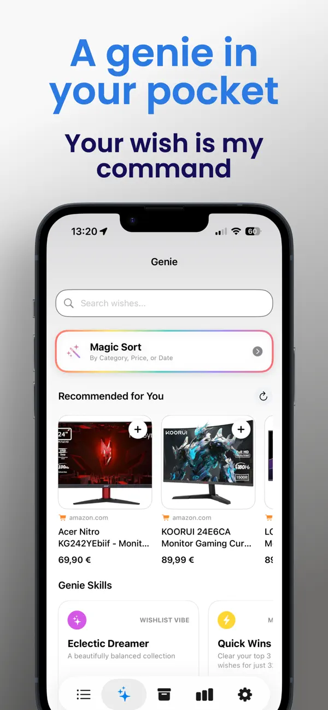
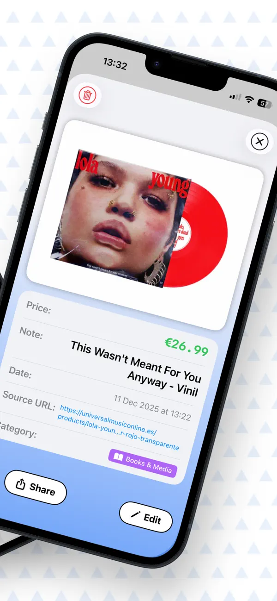
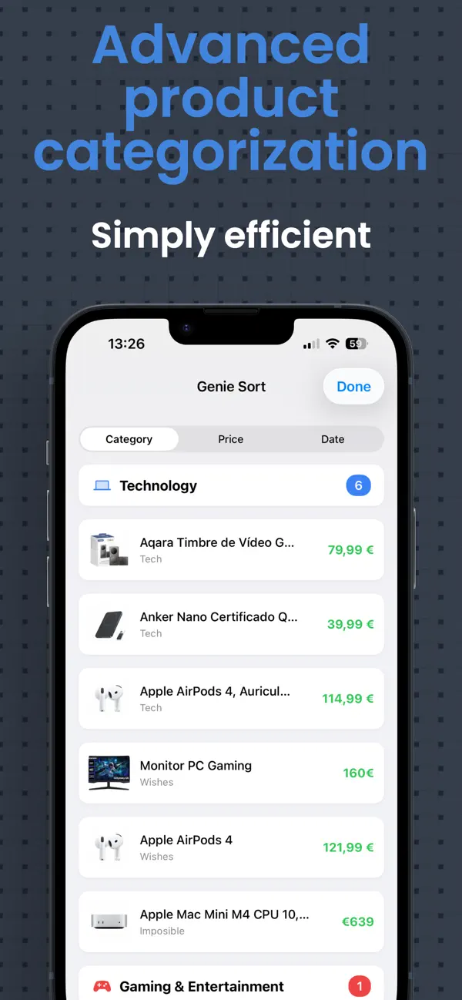

Guarda una idea
Añade un enlace, busca el producto en la web, importa una captura o escribe el deseo.
Guarda todas tus buenas ideas
Guarda ideas de regalo desde una captura o un enlace, organiza tus deseos y prepara listas compartidas con quien quieras.
Para iPhone y iPad · Disponible en español, inglés y más idiomas

Ideas a mano cuando las necesitas
Wishlist Genie convierte enlaces, capturas y ocurrencias en listas organizadas. Añade tus etiquetas, revisa tus deseos de un vistazo y comparte planes con quien tú quieras.
Tres pasos sencillos
Añade un enlace, busca el producto en la web, importa una captura o escribe el deseo.
Revisa la tarjeta, añade notas y etiquetas y guárdala en la lista adecuada.
Comparte una lista y sigue sus cambios en el historial de actividad.
Un vistazo por dentro


Una ayuda para tus ideas
Importa datos de productos desde enlaces o capturas y revisa el deseo antes de guardarlo.
Busca un producto desde Wishlist Genie y añádelo a una lista.
Crea y administra etiquetas para ordenar tus deseos como prefieras.
Planifica con otras personas y consulta los cambios en el historial de actividad.
Consulta tus deseos y categorías con más claridad en la sección de estadísticas.
Explora sugerencias pensadas para ayudarte a descubrir nuevas ideas para tus listas.
Usa Wishlist Genie en iPhone Duo y en toda la gama iPad.
Separa regalos, planes y cosas que te gustaría comprar.
Respuestas claras
Wishlist Genie te ayuda a guardar ideas de regalo, organizarlas en listas y compartirlas con familiares o amistades.
Añade un producto desde un enlace, búscalo en la web o importa los datos desde una captura. También puedes escribir la idea manualmente.
Sí. Invita a otras personas a una lista compartida para añadir y actualizar deseos juntos. La actividad muestra los cambios de sus integrantes.
Sí. Crea etiquetas personalizadas, asígnalas a tus deseos y adminístralas desde la app.
Sí. Wishlist Genie es compatible con iPad e incluye diseños adaptados a iPad y iPhone Duo.
Novedades de Wishlist Genie
Tu próxima gran idea